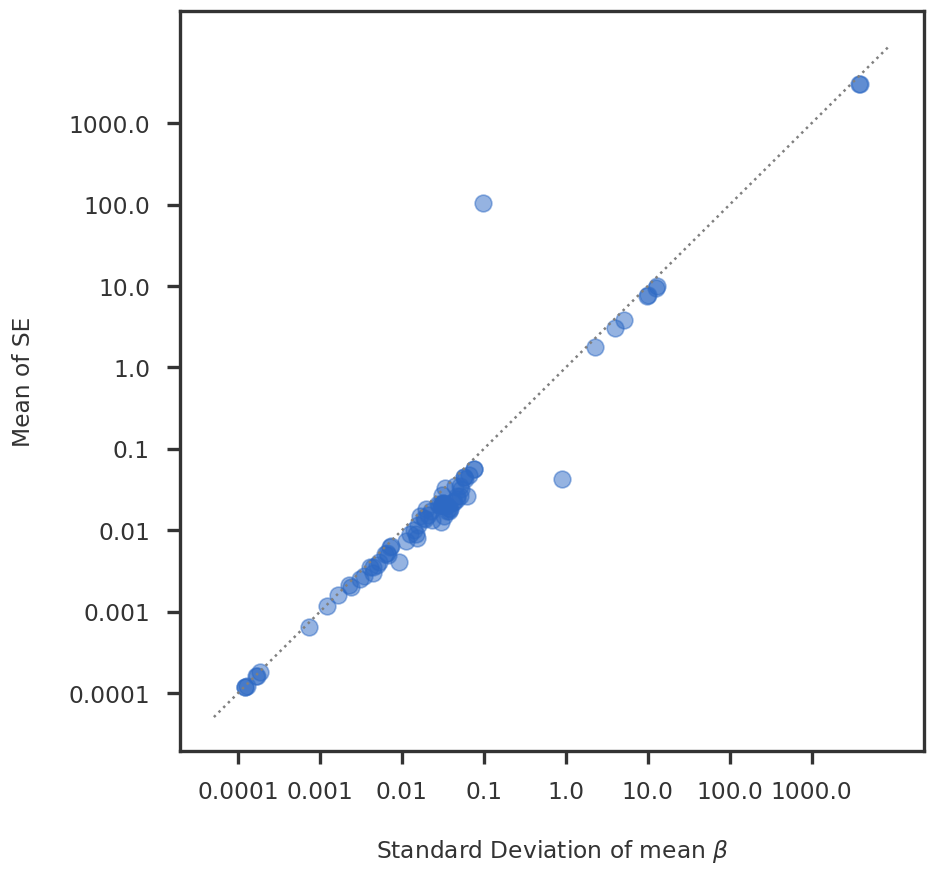
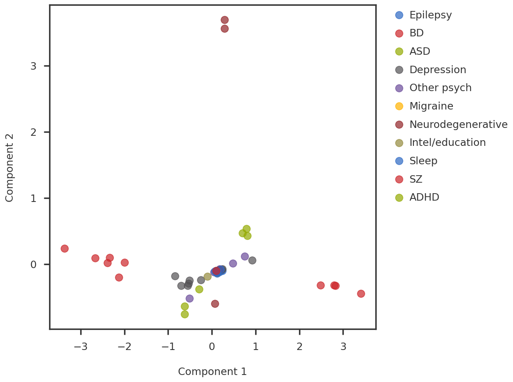
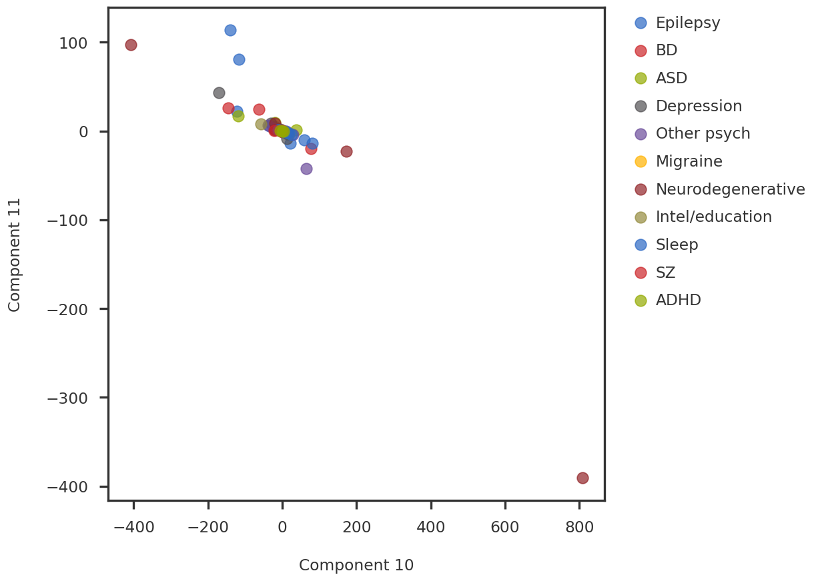

Code
import numpy as np
import pandas as pd
import matplotlib.pyplot as plt
from pymir import mpl_stylesheet
from pymir import mpl_utils
from sklearn.decomposition import PCA
mpl_stylesheet.banskt_presentation(splinecolor = 'black', dpi = 120)data_dir = "/gpfs/commons/home/sbanerjee/work/npd/npd_sumstats/data"
beta_df_filename = f"{data_dir}/beta_df.pkl"
prec_df_filename = f"{data_dir}/prec_df.pkl"
beta_df = pd.read_pickle(beta_df_filename)
prec_df = pd.read_pickle(prec_df_filename)
trait_df = pd.read_csv(f"{data_dir}/../trait_meta.csv")
phenotype_dict = trait_df.set_index('ID')['Broad'].to_dict()| AD_sumstats_Jansenetal_2019sept.txt.gz | CNCR_Insomnia_all | ENIGMA_Intracraneal_Volume | IGAP_Alzheimer | Jones_et_al_2016_Chronotype | Jones_et_al_2016_SleepDuration | MDD_MHQ_BIP_METACARPA_INFO6_A5_NTOT_no23andMe_... | MDD_MHQ_METACARPA_INFO6_A5_NTOT_no23andMe_noUK... | MHQ_Depression_WG_MAF1_INFO4_HRC_Only_Filtered... | MHQ_Recurrent_Depression_WG_MAF1_INFO4_HRC_Onl... | ... | ieu-b-7 | ieu-b-8 | ieu-b-9 | ocd_aug2017.txt.gz | pgc-bip2021-BDI.vcf.txt.gz | pgc-bip2021-BDII.vcf.txt.gz | pgc-bip2021-all.vcf.txt.gz | pgc.scz2 | pgcAN2.2019-07.vcf.txt.gz | pts_all_freeze2_overall.txt.gz | |
|---|---|---|---|---|---|---|---|---|---|---|---|---|---|---|---|---|---|---|---|---|---|
| rs1000031 | 199024.458358 | 10011.549996 | 2.477238e-07 | 3763.784862 | 55017.520527 | 52766.675941 | 19871.688626 | 15137.680215 | 4178.434135 | 2233.846318 | ... | 1841.993774 | 0.000000 | 0.000000 | 807.076446 | 6718.624026 | 2311.390533 | 10000.000000 | 8138.365288 | 4890.214680 | 5486.968450 |
| rs10003281 | 22856.567361 | 1133.556664 | 2.916697e-08 | 426.883410 | 6600.520046 | 6409.862295 | 0.000000 | 0.000000 | 0.000000 | 0.000000 | ... | 191.303716 | 1576.918373 | 522.797852 | 97.449835 | 644.180474 | 161.454642 | 1067.965312 | 845.102207 | 0.000000 | 1413.307705 |
| rs10004866 | 94890.527221 | 4762.875436 | 1.050357e-07 | 1707.533638 | 32754.999475 | 26882.772432 | 10813.491125 | 8764.504708 | 4277.851437 | 2319.393853 | ... | 1525.878906 | 8202.157669 | 2721.710114 | 364.197891 | 2953.686200 | 935.199993 | 4328.254848 | 3567.647779 | 1957.866708 | 3018.959063 |
| rs10005804 | 206618.921729 | 11038.416428 | 2.772408e-07 | 4056.959714 | 64813.392133 | 62392.035336 | 22005.212954 | 16849.615739 | 4356.932963 | 2312.149576 | ... | 1940.654777 | 18483.485302 | 6281.554632 | 849.985975 | 7305.135510 | 2525.188758 | 11080.332410 | 8482.205957 | 5175.715543 | 6400.000000 |
| rs10008644 | 158063.789343 | 9423.397217 | 2.006455e-07 | 3156.167151 | 0.000000 | 0.000000 | 17241.393373 | 13367.745330 | 4233.525731 | 2245.263569 | ... | 2576.721894 | 14146.018514 | 4756.898670 | 644.180474 | 5569.169080 | 1923.668821 | 8899.964400 | 6520.330626 | 4109.138725 | 5029.928072 |
| ... | ... | ... | ... | ... | ... | ... | ... | ... | ... | ... | ... | ... | ... | ... | ... | ... | ... | ... | ... | ... | ... |
| rs9989571 | 109822.466125 | 5873.344524 | 1.306537e-07 | 1992.984694 | 34294.837603 | 33358.164945 | 13084.182758 | 10409.396364 | 4202.125496 | 2229.414304 | ... | 1033.901635 | 8865.806572 | 3155.174433 | 460.498444 | 3763.784862 | 1284.670033 | 5327.934360 | 4466.580154 | 2657.030503 | 3585.643085 |
| rs9991694 | 26573.400307 | 8329.000636 | 0.000000e+00 | 1293.928886 | 47722.448143 | 47156.411824 | 13735.270804 | 10913.880494 | 4290.808036 | 2277.055875 | ... | 940.946216 | 0.000000 | 0.000000 | 241.867800 | 4385.772554 | 1587.276392 | 6830.134554 | 4867.463148 | 0.000000 | 3673.094582 |
| rs9992763 | 211931.733184 | 11131.971604 | 2.753919e-07 | 3955.539733 | 59284.820099 | 62341.100863 | 22088.886002 | 16776.496482 | 4282.664471 | 2272.667529 | ... | 3380.205516 | 18850.312674 | 6355.890127 | 835.310234 | 7305.135510 | 2576.721894 | 11317.338162 | 8693.444193 | 5327.934360 | 5827.166249 |
| rs9993607 | 196102.424365 | 10190.293509 | 2.527398e-07 | 3628.973726 | 58820.325813 | 54083.448826 | 20554.484769 | 15755.657508 | 4319.394301 | 2297.117807 | ... | 1810.774106 | 17119.565470 | 5724.715856 | 802.510252 | 6718.624026 | 2356.489773 | 10412.328197 | 8019.157989 | 5029.928072 | 5917.159763 |
| rs999494 | 134042.306674 | 7099.900190 | 1.786611e-07 | 2576.721894 | 42018.728288 | 40380.966307 | 15729.032249 | 12304.492912 | 4293.322036 | 2303.099209 | ... | 1205.632716 | 11673.174246 | 4049.476336 | 572.331220 | 4756.242568 | 1665.972511 | 7305.135510 | 5461.731166 | 3380.205516 | 4271.861250 |
8403 rows × 80 columns
mean_se = prec_df.apply(lambda x : 1 / np.sqrt(x)).replace([np.inf, -np.inf], np.nan).mean(axis = 0, skipna = True)
mean_se = pd.DataFrame(mean_se).set_axis(["mean_se"], axis = 1)
beta_std = beta_df.std(axis = 0, skipna = True)
beta_std = pd.DataFrame(beta_std).set_axis(["beta_std"], axis = 1)
error_df = pd.concat([mean_se, beta_std], axis = 1)
fig = plt.figure()
ax1 = fig.add_subplot(111)
ax1.scatter(np.log10(error_df['beta_std']), np.log10(error_df['mean_se']), alpha = 0.5, s = 100)
mpl_utils.set_xticks(ax1, scale = 'log10', spacing = 'log10')
mpl_utils.set_yticks(ax1, scale = 'log10', spacing = 'log10')
mpl_utils.plot_diag(ax1)
ax1.set_xlabel(r"Standard Deviation of mean $\beta$")
ax1.set_ylabel(r"Mean of SE")
plt.show()
(59, 59)idx1 = 0
idx2 = 1
pc1 = beta_pcs[:, idx1]
pc2 = beta_pcs[:, idx2]
fig = plt.figure()
ax1 = fig.add_subplot(111)
for label in unique_labels:
idx = np.array([i for i, x in enumerate(labels) if x == label])
ax1.scatter(pc1[idx], pc2[idx], s = 100, alpha = 0.7, label = label)
ax1.legend(bbox_to_anchor=(1.04, 1), loc="upper left")
ax1.set_xlabel(f"Component {idx1 + 1}")
ax1.set_ylabel(f"Component {idx2 + 1}")
plt.show()
U, S, Vt = np.linalg.svd(Xcent, full_matrices=False)
svd_pcs = U @ np.diag(S)
svd_pc1 = svd_pcs[:, idx1]
svd_pc2 = svd_pcs[:, idx2]
fig = plt.figure()
ax1 = fig.add_subplot(111)
for label in unique_labels:
idx = np.array([i for i, x in enumerate(labels) if x == label])
ax1.scatter(svd_pc1[idx], svd_pc2[idx], s = 100, alpha = 0.7, label = label)
ax1.legend(bbox_to_anchor=(1.04, 1), loc="upper left")
ax1.set_xlabel(f"Component {idx1}")
ax1.set_ylabel(f"Component {idx2}")
plt.show()def weighted_mean(x, w=None, axis=None):
"""Compute the weighted mean along the given axis
The result is equivalent to (x * w).sum(axis) / w.sum(axis),
but large temporary arrays are not created.
Parameters
----------
x : array_like
data for which mean is computed
w : array_like (optional)
weights corresponding to each data point. If supplied, it must be the
same shape as x
axis : int or None (optional)
axis along which mean should be computed
Returns
-------
mean : np.ndarray
array representing the weighted mean along the given axis
"""
if w is None:
return np.mean(x, axis)
x = np.asarray(x)
w = np.asarray(w)
if x.shape != w.shape:
raise NotImplementedError("Broadcasting is not implemented: "
"x and w must be the same shape.")
if axis is None:
wx_sum = np.einsum('i,i', np.ravel(x), np.ravel(w))
else:
try:
axis = tuple(axis)
except TypeError:
axis = (axis,)
if len(axis) != len(set(axis)):
raise ValueError("duplicate value in 'axis'")
trans = sorted(set(range(x.ndim)).difference(axis)) + list(axis)
operand = "...{0},...{0}".format(''.join(chr(ord('i') + i)
for i in range(len(axis))))
wx_sum = np.einsum(operand,
np.transpose(x, trans),
np.transpose(w, trans))
return wx_sum / np.sum(w, axis)
def weighted_pca_components(X, W, n_components = None, regularization = None):
import scipy as sp
weights = weighted_mean(X, W, axis = 0).reshape(1, -1)
_X = (X - weights) * weights
_covar = np.dot(_X.T, _X)
_covar /= np.dot(weights.T, weights)
_covar[np.isnan(_covar)] = 0
n_components = 20
eigvals = (_X.shape[1] - n_components, _X.shape[1] - 1)
evals, evecs = sp.linalg.eigh(_covar, subset_by_index = eigvals)
components = evecs[:, ::-1].T
explained_variance = evals[::-1]
Y = np.zeros((_X.shape[0], components.shape[0]))
for i in range(_X.shape[0]):
cW = components * weights[0, i]
cWX = np.dot(cW, _X[i])
cWc = np.dot(cW, cW.T)
if regularization is not None:
cWc += np.diag(regularization / explained_variance)
Y[i] = np.linalg.solve(cWc, cWX)
return Yidx1 = 10
idx2 = 11
weighted_pc1 = weighted_pcs[:, idx1]
weighted_pc2 = weighted_pcs[:, idx2]
fig = plt.figure()
ax1 = fig.add_subplot(111)
for label in unique_labels:
idx = np.array([i for i, x in enumerate(labels) if x == label])
ax1.scatter(weighted_pc1[idx], weighted_pc2[idx], s = 100, alpha = 0.7, label = label)
ax1.legend(bbox_to_anchor=(1.04, 1), loc="upper left")
ax1.set_xlabel(f"Component {idx1}")
ax1.set_ylabel(f"Component {idx2}")
plt.show()
def weighted_pca_components(X, W, n_components = None):
weights = weighted_mean(X, W, axis = 0).reshape(1, -1)
_X = (X - weights) * weights
_covar = np.dot(_X.T, _X)
_covar /= np.dot(weights.T, weights)
_covar[np.isnan(_covar)] = 0
eigvals = (_.shape[1] - n_components, X.shape[1] - 1)
evals, evecs = linalg.eigh(covar, eigvals=eigvals)
self.components_ = evecs[:, ::-1].T(1, 8403)